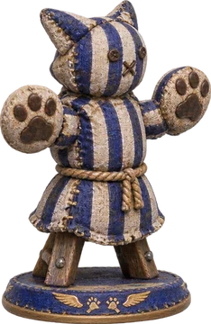
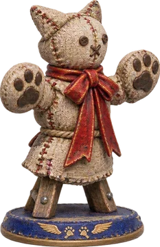

Школа перепутанных фамильяров
Карты и фигурки ведущего
Игровой комплект
3 игрока · 4 игрока · 5 игроков · 6 игроков · 7 игроков · 8 игроков
Карта кампании

Поля боя


Герои


Персонажи ведущего


Противники
 Холщовая учебная стойка 3Холщовая учебная стойка 6Холщовая учебная стойка 1Холщовая учебная стойка 5Холщовая учебная стойка 4Холщовая учебная стойка 2
Холщовая учебная стойка 3Холщовая учебная стойка 6Холщовая учебная стойка 1Холщовая учебная стойка 5Холщовая учебная стойка 4Холщовая учебная стойка 2

Чучело в полосатом чехле 1Чучело в полосатом чехле 5Чучело в полосатом чехле 3Чучело в полосатом чехле 6Чучело в полосатом чехле 2Чучело в полосатом чехле 4

Чучело с красной лентой 1Чучело с красной лентой 2Чучело с красной лентой 6Чучело с красной лентой 3Чучело с красной лентой 5Чучело с красной лентой 4